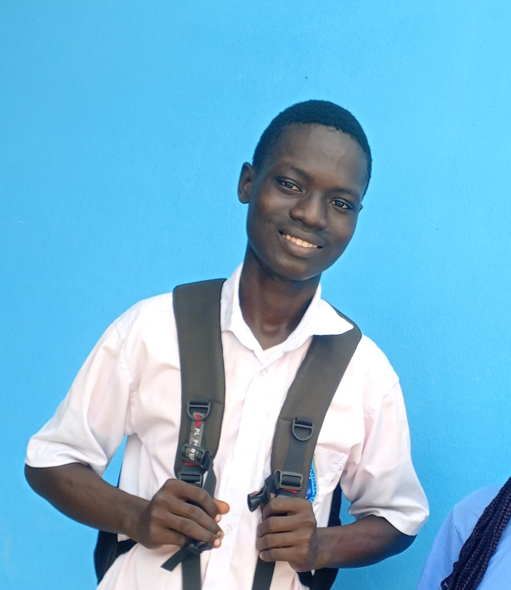

Qui suis-je ?

My name is HOSSOU Dominique. I am 18 years old and currently a second-year student in QuantitativeMy name is HOSSOU Dominique. I am 18 years old and currently a second-year student in Quantitative Hydrology and Integrated Water Resources Management (GIRE) at the Institut National de l'Eau (INE), University of Abomey-Calavi, Benin. I am passionate about water sciences, web development, and programming. I combine my technical and scientific skills to contribute to the sustainable management of water resources. My main tools include R, Python, and HTML/CSS.Hydrology and Integrated Water Resources Management (GIRE) at the Institut National de l'Eau (INE), University of Abomey-Calavi, Benin. I am passionate about water sciences, web development, and programming. I combine my technical and scientific skills to contribute to the sustainable management of water resources. My main tools include R, Python, and HTML/CSS.
Parcours et Experience
Expériences professionnelles
2025 - 2026
Créateur - hossou-dominique.com
Créateur du site https://dominiquehossou0-dot.github.io/ et de tutoriels vidéos concernant les languages
2024 - 2025
Stagiaire - Hydrologue
Travail sur la surveillance des eaux de surface
Parcours scolaire
2024 - 2027
Licence en Hydrologie Quantitative et Gestion Intégrée des Ressources en Eau
Obtention du diplôme de Licence avec Mention: Excellente
2016 - 2024
De la sixième en terminale
Obtention du diplôme de BAC D à la fin
Compétences et Niveau
Compétences
Niveaux
HTML / CSS
EXPERT
Programmation R
EXPERT
Compétences
Niveaux
Culture général
AVANCE
Python
AVANCE
Recommandation (à télécharger)
Rapport de fin de stage à la DDEEM - Ouémé
«Dominique a été docile et ponctuelle durant le long du stage»